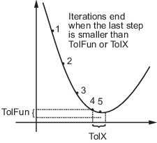

Set Optimization Options
How to Set Options
You can specify optimization parameters using an options structure
that you create using the optimset function.
You then pass options as an input to the optimization
function, for example, by calling fminbnd with
the syntax
x = fminbnd(fun,x1,x2,options)
or fminsearch with the syntax
x = fminsearch(fun,x0,options)
For example, to display output from the algorithm at each iteration,
set the Display option to 'iter':
options = optimset('Display','iter');
Options Table
| Option | Description | Solvers |
|---|---|---|
| A flag indicating whether intermediate steps appear on the screen.
| fminbnd, fminsearch, fzero, lsqnonneg |
| Check whether objective function values are valid.
| fminbnd, fminsearch, fzero |
| The maximum number of function evaluations allowed. The
default value is | fminbnd, fminsearch |
| The maximum number of iterations allowed. The default
value is | fminbnd, fminsearch |
| Display information on the iterations of the solver.
The default is | fminbnd, fminsearch, fzero |
| Plot information on the iterations of the solver. The
default is | fminbnd, fminsearch, fzero |
| The termination tolerance for the function value. The
default value is | fminsearch |
| The termination tolerance for x. The default value is
| fminbnd, fminsearch, fzero, lsqnonneg |
Tolerances and Stopping Criteria
The number of iterations in an optimization depends on the stopping criteria for the solver. These criteria include several tolerances you can set. Generally, a tolerance is a threshold which, if crossed, stops the iterations of a solver.
Tip
Generally, set the TolFun and TolX tolerances to well
above eps, and usually above 1e-14.
Setting small tolerances does not guarantee accurate results. Instead, a solver
can fail to recognize when it has converged, and can continue futile iterations.
A tolerance value smaller than eps effectively disables that
stopping condition. This tip does not apply to fzero, which
uses a default value of eps for
TolX.
TolXis a lower bound on the size of a step, meaning the norm of (xi – xi+1). If the solver attempts to take a step that is smaller thanTolX, the iterations end. Solvers generally useTolXas a relative bound, meaning iterations end when |(xi – xi+1)| <TolX*(1 + |xi|), or a similar relative measure.
TolFunis a lower bound on the change in the value of the objective function during a step. If |f(xi) – f(xi+1)| <TolFun, the iterations end. Solvers generally useTolFunas a relative bound, meaning iterations end when |f(xi) – f(xi+1)| <TolFun(1 + |f(xi)|), or a similar relative measure.MaxIteris a bound on the number of solver iterations.MaxFunEvalsis a bound on the number of function evaluations.
Note
Unlike other solvers, fminsearch stops
when it satisfies both TolFun and TolX.
Output Structure
The output structure includes the number
of function evaluations, the number of iterations, and the algorithm.
The structure appears when you provide fminbnd, fminsearch, or fzero with
a fourth output argument, as in
[x,fval,exitflag,output] = fminbnd(@humps,0.3,1);
The details of the output structure for each
solver are on the function reference pages.
The output structure is not an option that
you choose with optimset. It is an optional output
for fminbnd, fminsearch,
and fzero.